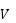
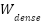

Deep Dive into LLaMa 3
LLaMa 3 is the LLM open sourced by Meta. The author has reversed engineer the model architecture from the source code. The purpose of the document is to provide readers an easy way to understand LLaMa 3 model and LLM in general.
LLaMa 3 model consists of one embedding layer, 32 transformer layers and one final dense layer. The following diagram illustrates the high level flow of data from word sequence to final output.
From the original word sequence, the input is first converted into token Ids by the tokenizer. The tokenizer LLaMa uses is called tiktoken from Open AI. The token Ids are then transformed into 4096 dimension vectors by the embedding layer. Because LLaMa 3 has 128k token in vocabulary, the embedding layer weight is 128k x 4096 dimension tensor (matrice). The output of embedding layers is a vector with dimension of 4096 for each token.
This vector forms the input into the first transformer layer and the output of the first transformer then becomes the input of the second transformer layer, and so on and so forth. Because the input and output of the transformer layer is of the same shape, it is possible to stack as many transformer layers as needed. LLaMa 3 has 32 layers.
The final output from transformer layers then feed into the final dense layer which creates the final output of the 128k dimension vector.
Transformer layer is the core part of the LLM model. This layer is based on a self-attention mechanism, which basically means the model needs to know the relationship between a token with any other tokens in the sequence. This is achieved by deriving three values: Q, K, V, also known as attention head.
Q represents the current token. K represents all the tokens in the sequence. V represents the value of tokens in the sequence.
For each token (actually embedding vector X), it will calculate Q, K, V as following:
Q = WqX, K = WkX, V = WvX
For Q and K, the model needs to add position embedding. We will talk about position embedding in the next section. Let’s now just assume after the position embedding, we will have a new Q and K.
However, for K and V, we need to form the complete sequence of all previous tokens in the sequence so we can understand the relationship between current token and previous token. To avoid calculating K, V for each token again and again, the model actually creates a KV cache so we can store the previously calculated K, V values.
Thus,
K = [ WkX1, WkX2, WkX3, …, WkXn ] Xn is the current token vector.
V = [ WvX1, WvX2, WvX3, …, WvXn ] Xn is the current token vector.
So eventually K and V are matrices of dimension: seq_length x attention head dim. In LLaMa 3, the attention head dim = 128.
Finally, we calculate the attention scores of the current token against all other tokens.
score =
Q is 1 x 128 dimension vector, ’s dim is 128 x seq_len,  dim is seq_len x 128. So the final score is 1 x 128 dimension vector.
The model then applies a softmax function on the score.
S = softmax(score)
LLaMa 3 actually has 32 attention heads so we have 32 Si, i = 1, 2, …, 32
We then concatenate the Si into one vector S = [ S1S2…S32] which is a 4096 (=128*32) dimension vector.
Then the model applies a linear transformation on S and adds back Xn.
Output = WoS + Xn
The dimension of Output vector is still 4096
This is the attention layer output but we are not done yet for the transformer layer. The model needs to normalize output.
Normalized Output (Z) = Root Mean Square Normalization Function (S)
Then finally, we will apply fully connected layer with sigmoid linear unit activation:
Final Output = W2(F.silu(W1Z) * W3Z)
Note: * here is element wise multiplication
Z is 4096 x 1, W1 and W3’s dim are 11008 x 4096, W2’s dim is 4096 x 11008.
The final output is still a 4096 dimension vector.
The above process then repeated for 32 times.
The final dense layer is quite straightforward. It takes the output from the last transformer layer and applies the weight matrix to convert it to a 128k vector (each value in the vector represents the logit value of each token in vocabulary).
Logits =
 has 128k x 4096 dimensions.
LLaMa 3 is using rotary position embedding. Rotary position embedding is better at preserving relative position than absolute position embedding.
First a frequency list is defined as:
Freqs = 1, , , , …
T = 1, 2, 3, …, 2048 (this represents the absolute position in sequence)
Freqs matrix = cross product of Freqs and T, it will look like this
1, , , , …
2, , , , …
…
2048, , , , …
Freqs polar matrix = convert Freqs Matrix from Polar coordinate to x-y coordinate
In LLaMa 3, the default value of
For Q and K in attention head, we will apply position embedding as following:
P is the position in sequence. Freqs Matrix p is p-th row in Freqs Matrix.
Q = Qp * Freqs Matrix p (element wise multiplication)
K = Kp * Freqs Matrix p
The above requires manipulation of Q and K so they will fit to u * 2 dimensions before doing element wise multiplication. For example, if Q is 128 dim, then we need to reshape Q into 64 x 2. Each value of Q is then multiplying with Freq Matrix 64 of x-y coordinates.
For each position, there are 2048 x-y coordinate pairs. Because we have 32 attention heads, each attention head is going to use 64 of x-y coordinate pairs.
How many parameters does LLaMa 3 model have using the default settings (dim = 4096, layers = 32, Vocab size = 128 k) ?
Embedding Layer: 128k * 4096 = 524M
Each Transformer Layer:
Wq, Wk, Wv = 3 * 128 (head dim) * 4096 * 32 (heads) = 50 M
Wo = 4096 * 4096 = 17 M
W1,2,3 = 11008 * 4096 * 3 = 135 M
Total = 202 M
Final Dense Layer: 128k * 4096 = 524M
Total Parameter Count = Embedding Layer + 32 * Transformer Layer + Final Dense Layer
= 524 M + 32 * 202 M + 524M = 7.5 B
So if we use the default setting, the model is LLaMa 3 8B model.
In order to speed up both training and inference speed, the calculation is parallelized across all the tokens in the sequence. Also, the input sequences can be batched. Therefore, the typical dimensions of a tensor in the model would be batch_size * seq_len * embedding dim. For weight tensor, there usually would be another dimension added.
To parallelize the matrix multiplication, LLaMa 3 utilizes the parallel layers from Fairscale (also from Meta).